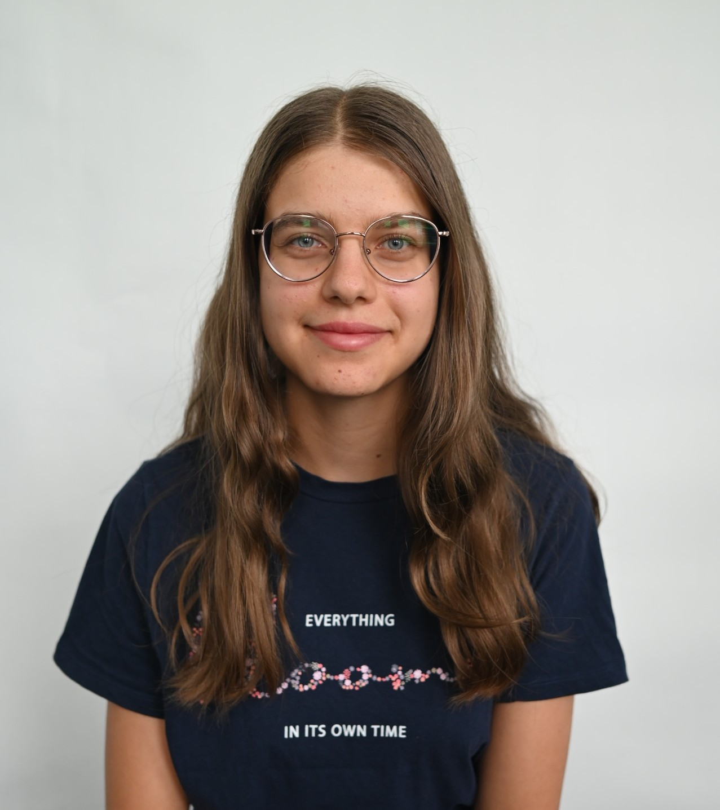
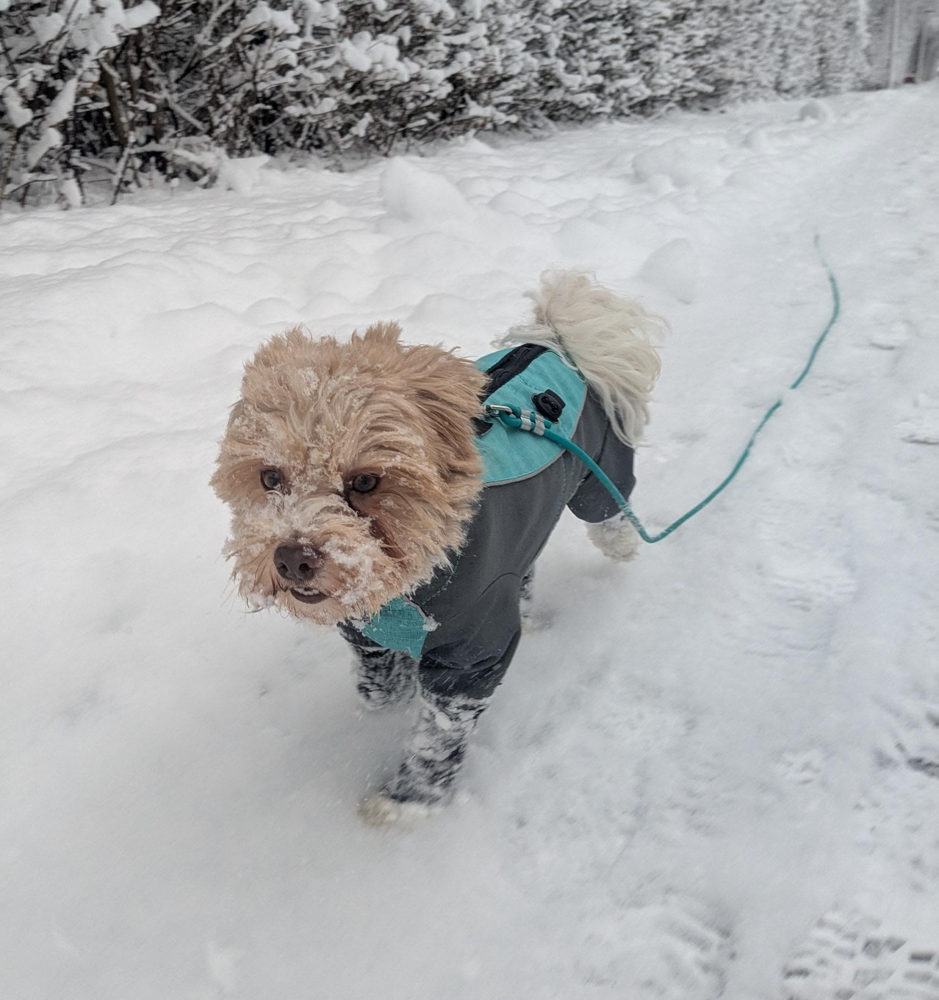

Darf ich mich vorstellen
Mein Name ist Noemi Zingg.
Ich bin 16 Jahre alt und wohne in Buchs im Kanton St.Gallen.
Ich habe im Sommer die Lehre als Informatikerin Applikationsentwicklung bei der Brusa Hypower begonnen.

Freitzeitaktivitäten
Meine Hobbys sind:
- Eislaufen im Winter
- Inlineskaten im Sommer
- Leinwände bemalen
- Mein Hund
- Kochen

Schulbildung
seit 2025
2022-2025
2016-2022
Lehre als Informatikerin Applikationsentwicklung
Sekundarstufe in Buchs SG
Primarschule in Buchs SG
Wie ich zu meinem Beruf gekommen bin
Ich wollte gerne einen technischen Beruf lernen.
Dazu habe ich in viele Berufe geschnuppert.
Am meisten interessierten mich die Berufe Mediamatikerin und Informatikerin in der
Plattformentwicklung und Applikationsentwicklung.
Mir gefiel der Beruf Informatikerin Applikationsentwicklung am besten.
Man hat immer neue Herausforderungen und kann auf Probleme verschiedene kreative Lösungen
entwickeln, die später zu grossem Nutzen sind.
Dazu habe ich in viele Berufe geschnuppert.
Am meisten interessierten mich die Berufe Mediamatikerin und Informatikerin in der
Plattformentwicklung und Applikationsentwicklung.
Mir gefiel der Beruf Informatikerin Applikationsentwicklung am besten.
Man hat immer neue Herausforderungen und kann auf Probleme verschiedene kreative Lösungen
entwickeln, die später zu grossem Nutzen sind.